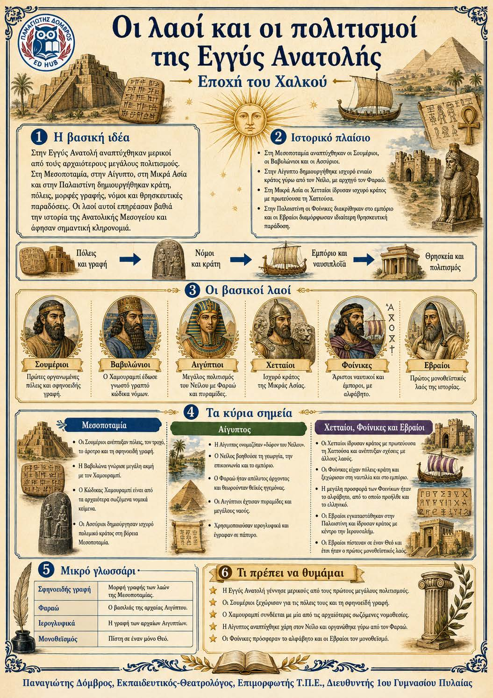

Πληροφοριογράφημα ενότητας
Το πληροφοριογράφημα αυτής της ενότητας δεν έχει ανέβει ακόμη. Οι σημειώσεις παραμένουν πλήρως διαθέσιμες.

Μεσοποταμία, Αίγυπτος, Μικρά Ασία και Παλαιστίνη - Εποχή του Χαλκού
Στην Εγγύς Ανατολή δημιουργήθηκαν μερικοί από τους πρώτους μεγάλους πολιτισμούς της ιστορίας. Οι λαοί της Μεσοποταμίας, οι Αιγύπτιοι, οι Χετταίοι, οι Φοίνικες και οι Εβραίοι ίδρυσαν οργανωμένα κράτη και πόλεις. Ανέπτυξαν τη γραφή, τους νόμους, το εμπόριο, τις επιστήμες και τη θρησκευτική ζωή. Τα επιτεύγματά τους επηρέασαν βαθιά τους μεταγενέστερους λαούς της Μεσογείου.
